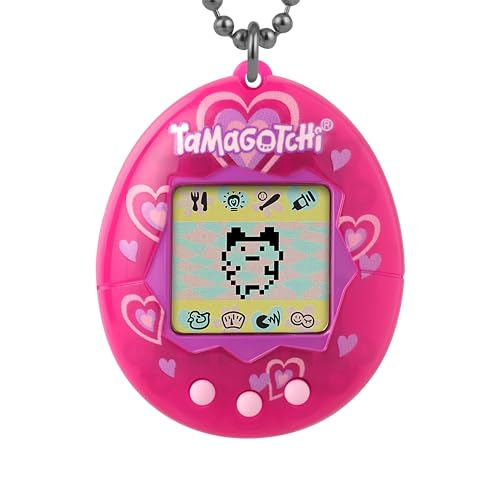
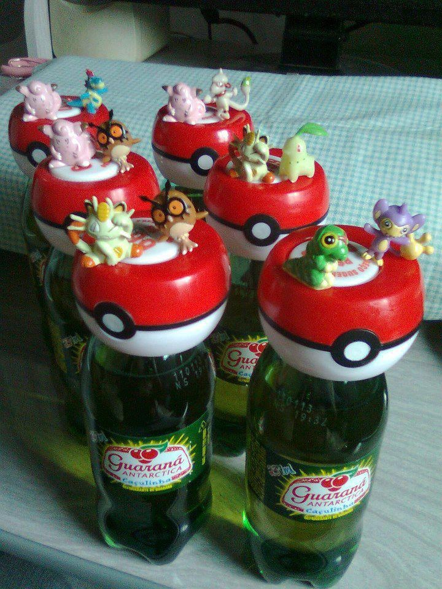
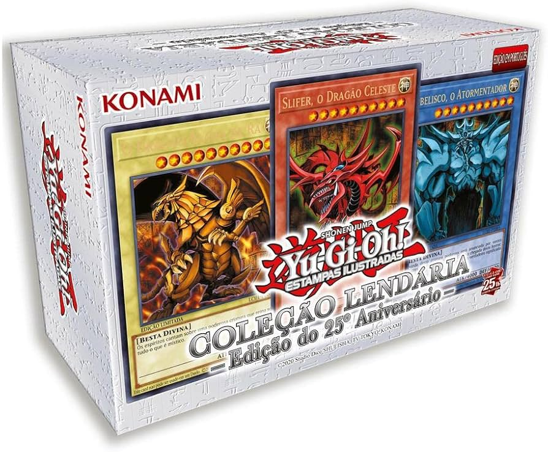

🏆 Top 10 Brinquedos Mais Famosos dos Anos 90 e 2000
1

Tamagotchi
O bichinho virtual que conquistou o mundo! Lançado em 1996 no Japão, rapidamente se espalhou globalmente. Crianças cuidavam de um pet digital 24 horas por dia.
- Criado pela Bandai
- Vendeu mais de 82 milhões de unidades
- Revolucionou os brinquedos eletrônicos
2

Pokémon
Fenômeno mundial que começou como um jogo de Game Boy em 1996 e se transformou em desenho, filme, cartas e muito mais!
- Criado por Satoshi Tajiri
- Mais de 1000 espécies de Pokémon
- Franquia avaliada em bilhões de dólares
3

Yu-Gi-Oh
Jogo de cartas que dominou os recreios e transformou duelos em verdadeiras batalhas épicas!
- Baseado no mangá de Kazuki Takahashi
- Popularizado em 1999
- Milhões de cartas colecionadas